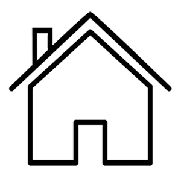

<style>
    #pp-main{
        margin: 10px 15px;
    }
    #main-title{
        display: flex;
        align-items: center;
        margin: 5px;
        margin-bottom: 15px;
    }
    #main-title img{
        margin-right: 5px;
    }
    .ct-faq-item{
        padding: 10px;
        border-radius: 6px;
        box-shadow: 0px 0px 6px grey;
        margin: 15px 0px;
        text-align: justify;
    }
    .ct-faq-item b{
        display: block;
        margin: 7px 0px;
    }
    .bold{
        font-weight: bold;
    }
    .skyblue{
        color: #0cf;
    }
    .ct-faq-item button{
        padding: 6px;
        outline: 0;
        border-radius: 5px;
        border: 1px solid #0cf;
        background: #fff;
        color: #0cf;
        transition: ease .5s;
        display: inline-block;
        margin: 0px 10px;
    }
    .ct-faq-item button:hover{
        background: #0cf;
        color: #fff;
    }
    .ct-btn-nav{
        display: flex;
        justify-content: space-around;
    }
    #btn-home{
        display: flex;
        align-items: center;
    }
    @media (max-width: 480px){
        #btn-home{
            width: max-content;
            margin: 5px 0px;
        }
        .ct-btn-nav{
            display: flex;
            justify-content: flex-start;
            flex-wrap: wrap;
            
        }
    }
</style>

<main id="pp-main">
    <h3 id="main-title"> Conditions générales d'utilsation</h3>
        Nous sommes <span class="bold"><span class="skyblue">ZANDO</span>KIN</span>, un moyen efficace d’exposition des produits pour faciliter le open e-commerce. Dans le souci de satisfaire totalement nos internautes, <span class="bold"><span class="skyblue">ZANDO</span>KIN</span> est une plateforme gratuite. Nous vous expliquons en détails, dans les lignes qui suivent, pourquoi et comment utiliser <span class="bold"><span class="skyblue">ZANDO</span>KIN</span> ; quelles sont les conditions générales d’utilisations et le financement de <span class="skyblue">ZANDO</span> ; et enfin notre politique pour la gestion de vos informations.
        Vous pouvez télécharger ceci en format PDF ou Word
    <div class="ct-faq-item">
        <b>1. Pourquoi et Comment utiliser <span class="bold"><span class="skyblue">ZANDO</span>KIN</span></b>
        Rendez-vous www.zandokin.com, la page d’accueil vous propose de vous connecter 
        ( si vous avez déjà un compte au préalable) ou de vous inscrire (si c’est votre première fois), 
        toutes fois pour vous connecter vous devez entrer votre nom d’utilisateur 
        (votre nom et votre prénom séparés d’un espace ex. Elvi Lokonga) et votre mot de passe. Voir se connecter. 
        L’inscription par contre requiert un max d’informations pour vous distinguer des autres utilisateurs, 
        les plus importantes sont : le nom, le prénom, le numéro whatsapp et un mot de passe. 
        Notez que l’adresse e-mail n’est pas obligatoire.
    </div>
    <div class="ct-faq-item">
        <b>2. Les conditions générales d’utilisation</b>
        Pour l’utilisateur
        Aucune bien particulière condition n’est requise pour utiliser <span class="bold"><span class="skyblue">ZANDO</span>KIN</span>, seulement vous devez avoir un compte whatsapp. Télécharger la dernière version de l’application whatsapp ici.
        Pour les articles
        Nous vous recommandons de prendre une photo qui met en valeur l’article que vous voulez publier.
        La modification d’article reste disponible tant que l’article n’est pas supprimé.
        Vous devez supprimer un article après qu’il soit vendu ou qu’il n’est plus disponible.
        Si vous tentez d’acheter un article qui s’avère être définitivement indisponible mais toujours disponible sur le site, vous pouvez signaler cet article sur le bouton en haut en droite.
        Pour les services
        La publication des services ne sera disponible que dans la version pro.
        Pour vos services, vous pouvez mettre une vidéo.
        La modification du service reste disponible tant que celui-ci n’est pas supprimé.
        Vous devez supprimer le service dès lors qu’il n’est plus disponible.
    </div>
    <div class="ct-faq-item">
        <b>3. Le financement de <span class="skyblue">ZANDO</span></b>
        Comme vous le savez, <span class="bold"><span class="skyblue">ZANDO</span>KIN</span> est une plateforme gratuite. Par ailleurs la survie de <span class="bold"><span class="skyblue">ZANDO</span>KIN</span> 
        exige un minimum de financement pour diverses nécessités de ce fait, nous ne rendons pas payant 
        l’utilisation de <span class="bold"><span class="skyblue">ZANDO</span>KIN</span> mais nous acceptons d’être financé par des entreprises qui nous proposent 
        de faire des publicités pour leurs produit, du moins nous nous assurons que les publicités ne rendent pas 
        désagréables votre expérience sur <span class="bold"><span class="skyblue">ZANDO</span>KIN</span>. Si vous êtes une entreprise et que vous voulez que <span class="bold"><span class="skyblue">ZANDO</span>KIN</span> fasse 
        la publicité de vos produits veuillez nous contacter via nos réseaux ou notre mail. Voir nous contacter.
    </div>
    <div class="ct-faq-item">
        <b>4. Politiques de gestion des informations des utilisateurs</b>
        Nous nous assurons de ne divulguer aucune de vos informations personnelles ;
        Vous êtes le seul à avoir les informations de votre connexion ;
        Votre numéro whatsapp est utilisé pour permettre à vos clients de communiquer avec vous de ce fait nous vous recommandons fortement d’utiliser un numéro spécialement prévu pour le business.
        Vous pouvez modifier vos informations depuis les paramètres, toutes fois après la modification vous ne pourrez modifier vos informations qu’après 15 jours.
        En cas de non-satisfaction, vous pouvez supprimer votre compte via les paramètres.
    </div>
    <div class="ct-faq-item ct-btn-nav" >
        <button routerLink="" id="btn-home">Retour à l'acceuil</button>
        <button (click)="navigateTo('faqs')" id="btn-home">Sponsonriser Zandokin</button>
        <button (click)="navigateTo('faqs')" id="btn-home">Questions frequentes</button>
    </div>
</main>